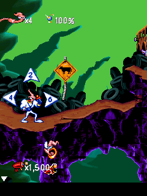

We seemed to have a failure deep in the native runtime. The garbage collector was reaching data that was really an ARM instruction. Following that trail took us back to a much more ordinary mistake: the file reader had gone to the wrong place.
A wrong turn inside a file.
The inherited seek service swapped END and CURRENT and returned zero on success. Jim used CURRENT to navigate its custom archive. With the wrong contract, it read the archive directory as constants.bin. Those bytes became a malformed VM array, and the collector eventually dereferenced module code as though it were array data.EJ02EJ03
We corrected the seek origins and returned the resulting file offset. The original constants.bin read could then reach the right entry. That got us out of the crash through the compatibility service, with the original game instructions intact.EJ04

The original 240×320 New Junk City scene, retained from desktop original-engine acceptance. The tutorial and game world are original output; this is a host capture.
Open the image for the full original view.
EJ90The same wait, with less work.
The original sleep helper spent its delay busy-waiting through the interpreter. Parking the worker kept roughly the same hundred-millisecond elapsed wait while changing the measured thread CPU cost from 99.71 milliseconds to 0.34. That was a desktop measurement of one wait, not a claim that the phone suddenly ran cool.EJ06
Startup also spent a great deal of work decompressing resources. A tightly checked derived cache could return the exact decoded bytes to the allocation made by the original runtime. Fifty retained native outputs matched, as did fourteen replay frames. The cache avoided roughly 243 million interpreted startup instructions while keeping a native-decoder fallback for a miss.EJ05EJ07EJ08
About these records
This chapter follows checkpoint investigations and retained original-engine host tests. The sleep/codec measurements have their stated narrow scopes, and the image is historical desktop output. Reading saved files on a fresh boot is not an invented mid-level save-state feature. The later reissue records host checks without a new Earthworm-specific phone verdict; it does not define the owner’s current overall play history. No game or bridge was executed or modified for this writing.
The receipts
Selected report lines, investigation notes and owner recollections. Open a receipt for its source and scope.
EJ02 / A seek bug became a garbage-collector faultCheckpoint handoff
Source: 02-Earthworm_Jim_Bridge_v0.1.0_PRIVATE_CHECKPOINT.zip / Earthworm_Jim_Bridge_v0.1.0_PRIVATE/TECHNICAL_HANDOFF.txt · selected lines 15–18
EARTHWORM ABI CORRECTIONS The inherited IFile.Seek implementation used incorrect origin values and returned zero on success. Earthworm's original BREW ABI uses START=0, END=1, CURRENT=2 and returns the resulting byte position. Incorrect navigation read the data.bar directory as constants.bin, creating a malformed VM array whose data pointer reached the module start; the original native GC then faulted. Correcting seek origins and return values fixes the startup fault. No ARM instruction or game asset patch was required. The adapted services also supply the original 240x320/depth16 device-info prefix, free bytes from the actual 16MiB guest heap, BREW3 packed version, font metrics, named BAR resource selection/path normalization, and normal sound policy. Optional carrier information is reported unavailable with the original error/size convention. The new startEarthwormSession factory accepts the original module, resource map, saves, pixel decoder and explicit diagnostic mode.
EJ03 / Why constants.bin became the archive directoryRetained diagnosis
Source: 02-Earthworm_Jim_Bridge_v0.1.0_PRIVATE_CHECKPOINT.zip / Earthworm_Jim_Bridge_v0.1.0_PRIVATE/evidence/startup_abi_findings.json · selected lines 2–13
"cause": "IFile.Seek END and CURRENT whence values were reversed, so constants.bin archive lookup rejected its relative seek and read the data.bar directory as game data",
"fault": "Native GC dereferenced an ARM instruction word because the misread directory created a type-4 array with count 0x00250001",
"resolved_abi": {
"START": 0,
"END": 1,
"CURRENT": 2,
"success": "resulting file offset",
"failure": -1
},
"native_evidence": "Native archive skip at guest 0x0010820C requested CURRENT(2) +1107020 from position zero",
"next_service_fixes": "BREW resource lookup selects the requested native BAR filename; igp.bar is a BREW BAR, data.bar is a custom archive, app.bar is a text manifest",
"verification": "tests/EarthwormSeekRegression.java exercises actual runtime vtable traps and original constants.bin read"EJ04 / The original constants.bin read works againHost regression evidence
Source: 02-Earthworm_Jim_Bridge_v0.1.0_PRIVATE_CHECKPOINT.zip / Earthworm_Jim_Bridge_v0.1.0_PRIVATE/evidence/seek_regression.txt · selected lines 1–2
PASS: actual IFile vtable trap service. START=0, END=1, CURRENT=2; returns resulting file offset. Invalid seeks return -1 and retain the prior position. PASS: original startup constants.bin seek uses CURRENT +1107020 from file position 0; reads the first four bytes of the actual constants.bin entry rather than the archive directory.
EJ90 / Historical image / Earthworm Jim in New Junk CityHistorical host capture
Source: Earthworm_Jim_Bridge_v0.1.0_PRIVATE/evidence/final_acceptance/06_new_junk_city.png
Reviewed original game image; no personal interface or image metadata. This is a retained desktop original-runtime capture, not a new phone screenshot.
Unchanged historical game framebuffer. Source member: Earthworm_Jim_Bridge_v0.1.0_PRIVATE/evidence/final_acceptance/06_new_junk_city.png Image SHA-256: f2b2963c120f6070ac9ffce9b52261e06d6c8ab8fc0a20b471b1617c76ff7e0b The original 240×320 New Junk City scene, retained from desktop original-engine acceptance. The tutorial and game world are original output; this is a host capture.
EJ06 / A 100ms wait without 100ms of busy workHost timing evidence
Source: 02-Earthworm_Jim_Bridge_v0.1.0_PRIVATE_CHECKPOINT.zip / Earthworm_Jim_Bridge_v0.1.0_PRIVATE/evidence/cooperative_sleep.txt · selected lines 1–3
Original native100ms sleep: wall 99.69ms; thread CPU 99.71ms Cooperative same original100ms sleep ABI: wall 101.13ms; thread CPU 0.34ms PASS: original elapsed wait preserved; worker parked during wait.
EJ05 / Keep the wait, spare the interpreterCheckpoint handoff
Source: 02-Earthworm_Jim_Bridge_v0.1.0_PRIVATE_CHECKPOINT.zip / Earthworm_Jim_Bridge_v0.1.0_PRIVATE/TECHNICAL_HANDOFF.txt · selected lines 20–30
EXECUTION AND TIMING BrewRuntime executes the original module's applet, event handler, ARM/Thumb instructions and game logic. Android supplies compatible interfaces for display/bitmaps, resources, files, input, clock, timers and media. BridgeController serializes guest execution, timers, audio callbacks and save writes on one HandlerThread. Detailed trace and diagnostic counting are off during ordinary play; explicit reports capture the current session. Only an actually due, already registered native timer callback is pumped. Input and audio events do not pump extra timers. Native registrations retain their independent callback/data identity. The host schedules from the registration deadline, without subtracting preceding guest work a second time. The original sleep helper at 0x0011D548 parks the worker for the requested elapsed delay instead of interpreting a busy-wait. This hook is gated by the exact original module SHA-256. The host proof preserves a 100ms elapsed wait while reducing thread CPU spent on that wait from approximately 100ms to under 1ms. This is a host measurement, not a phone thermal result. Deterministic host tests use an explicit virtual clock; Android uses real elapsed time. BYTE-EXACT CODEC ACCELERATION The original module and compressed resources remain unchanged. The LZMA helper at 0x00165BBC can use a derived cache only when the compressed body SHA-256, lc/lp/pb properties and requested output length all match. It writes the exact decoded bytes into the allocation made by the original runtime, then returns through the original ABI. A cache miss follows the native decoder. Original game objects and game logic still execute. app/assets/lzma_cache.bin contains 193 unique original streams, derived from 232 pack occurrences, with 1,627,451 decoded bytes. Fifty captured native outputs matched byte-for-byte. Fourteen matched original frames through startup and the first-game menu/intro sequence validate the accelerated codec and quiet presentation path. The manifest is in evidence/lzma_cache_manifest.json; tools/prepare_codec_cache.py rebuilds the cache from the unchanged data.bar. This avoids about 243 million interpreted startup instructions.
EJ07 / Fifty native codec outputs reproducedHost codec evidence
Source: 02-Earthworm_Jim_Bridge_v0.1.0_PRIVATE_CHECKPOINT.zip / Earthworm_Jim_Bridge_v0.1.0_PRIVATE/evidence/native-codec/capture_provenance.json · selected lines 23–29
"validation": "tools/prepare_codec_cache.py compares every retained native .original byte sequence against the generated cache; all 50 passed",
"scope": "Native codec calls reached by boot through the sound prompt; no all-game equivalence claim",
"reproduction_validation": {
"captured_calls": 50,
"all_retained_bodies_and_native_outputs_equal": true,
"reproduction_script": "tests/capture_native_codec.py",
"result": "Fresh original ARM run reproduced all 50 retained compressed bodies and decoded outputs byte for byte"EJ08 / Fourteen replay frames matchHost pixel comparison
Source: 02-Earthworm_Jim_Bridge_v0.1.0_PRIVATE_CHECKPOINT.zip / Earthworm_Jim_Bridge_v0.1.0_PRIVATE/evidence/pixel_equivalence.json · selected lines 23–25
"virtual_clock_minimum_step_ms": 100, "frame_count": 14, "all_pixels_equal": true,
EJ09 / A tap that lives long enough to be seenCheckpoint handoff
Source: 02-Earthworm_Jim_Bridge_v0.1.0_PRIVATE_CHECKPOINT.zip / Earthworm_Jim_Bridge_v0.1.0_PRIVATE/TECHNICAL_HANDOFF.txt · selected lines 37–42
INPUT AND PRESENTATION The multitouch D-pad retains source reference counts for touch/controller chords. The action key preserves original tap-to-whip/hook and hold-to-fire behavior. Dedicated 1/2/3 buttons supply the actual diagonal/vertical jump key codes. The complete original keypad is available. A touch or accessibility tap released before the game polls input remains native-down through one normally scheduled native tick, then receives its release. Long holds release immediately once sampled. Re-press cancels a deferred release without a duplicate press. Background, focus loss and restart clear native held keys, including pending releases. This adds no input-driven timer callback. The Android player scales the original framebuffer proportionally with nearest-pixel rendering and applies actual system/navigation/cutout insets. Frame snapshots follow changed pixel revisions. Native bitmap caches invalidate on changes to their exact backing byte ranges, including guest and host writes.
EJ11 / Music starts quietly, then the volume risesCheckpoint handoff
Source: 02-Earthworm_Jim_Bridge_v0.1.0_PRIVATE_CHECKPOINT.zip / Earthworm_Jim_Bridge_v0.1.0_PRIVATE/TECHNICAL_HANDOFF.txt · selected lines 32–35
AUDIO The original guest supplies decompressed MIDI/CMID bytes to IMedia. Android routes each request by SHA-256 of those exact original bytes. Ten standard MIDI files are preserved unchanged. Twenty-one CMID effects are decoded from the original IMA ADPCM samples to 16kHz mono signed 16-bit WAV, with no replacement sound or gain adjustment. tools/prepare_earthworm_audio.py regenerates and validates them; use --java-check for independent Java MIDI verification. The APK stores these assets uncompressed so AssetManager.openFd can address them. The original game can PLAY at volume zero and raise the volume afterward. VOLUME events update the existing player in place. They preserve the PLAY serial used to guard START/DONE callbacks, so a volume change neither recreates playback nor invalidates its callback. Guest START/DONE notifications and actual original MIDI plus CMID effect payloads are covered by final acceptance and routing evidence.
EJ12 / Jim reaches New Junk City and uses his weaponsOriginal-engine host acceptance
Source: 02-Earthworm_Jim_Bridge_v0.1.0_PRIVATE_CHECKPOINT.zip / Earthworm_Jim_Bridge_v0.1.0_PRIVATE/evidence/final_acceptance/acceptance.txt · selected lines 6–21
Deferred zero-duration logical tap original intro SKIP: one normal timer, then native release: PASS 05_how_to_play: live, steps=558800642, timers=381, nonblack=54712 06_new_junk_city: live, steps=589385098, timers=393, nonblack=56668 07_movement_right: live, steps=618234828, timers=405, nonblack=56000 08_jump: live, steps=636377054, timers=411, nonblack=57102 Deferred zero-duration logical tap shared Whip action: one normal timer, then native release: PASS 09_tap_whip: live, steps=648008669, timers=415, nonblack=58603 10_hold_fire: live, steps=743105251, timers=445, nonblack=55753 10b_original_pause_menu: live, steps=786169636, timers=459, nonblack=61492 Deferred zero-duration logical tap original pause SELECT / RESUME: one normal timer, then native release: PASS 10c_original_resume: live, steps=818942207, timers=468, nonblack=55825 11_lifecycle_resume: live, steps=828947972, timers=471, nonblack=55810 Original audio PLAY payload and post-PLAY VOLUME=100: PASS Original audio START/DONE notifications: PASS Original suspend/resume events2/3: PASS Original native save files: [earthworm_1.sav, rms_earthworm.sav]
EJ13 / The original saves are read on a fresh sessionOriginal-engine host acceptance
Source: 02-Earthworm_Jim_Bridge_v0.1.0_PRIVATE_CHECKPOINT.zip / Earthworm_Jim_Bridge_v0.1.0_PRIVATE/evidence/final_acceptance/acceptance.txt · selected lines 23–29
Unimplemented call signatures observed: []
Original Earthworm Jim uses its original bitmap rendering with original MIDI music and CMID effects through IMedia.
Exact codec helper cache hits: 82; cooperative original sleep calls: 471
Quiet ABI calls [system frees, DIB setup, media volume, original duplicate closes]: [4, 0, 9, 0]
System call totals (first 3 of each signature traced): {SYS_B+0x00000000=28169, SYS_B+0x00000004=47306, SYS_B+0x00000010=28, SYS_B+0x00000014=529, SYS_B+0x00000020=380, SYS_B+0x00000068=48, SYS_B+0x0000006C=4, SYS_B+0x0000008C=1, SYS_B+0x0000009C=982, SYS_B+0x000000B0=3378, SYS_B+0x000000C0=813815, SYS_B+0x00000138=1}
12_native_save_reload: live, steps=94316669, timers=170, nonblack=23165
Fresh session opens and reads exported original native saves and reaches the original startup flow: PASS (not an in-level quick-save claim)EJ15 / The shared shell keeps Jim’s original actionsLater checkpoint README
Source: Earthworm_Jim_Bridge_v0.1.1_PRIVATE_CHECKPOINT.zip / Earthworm_Jim_Bridge_v0.1.1_PRIVATE/README_FIRST.txt · selected lines 3–18
Normalized to Wakka Bridge Gameplay UI Kit v1.1.2. Real shared source is compiled into the APK. Install over v0.1.0; package, signing and game-save location are preserved. The original runtime, all payloads, audio assets, codec acceleration and timing fixes match the original checkpoint. D-pad: left/right moves; up jumps; down squats. Continuous sliding and simultaneous cardinal contacts are preserved. WHIP / OK taps whip/hook; hold for Fire. 1/2/3 retain left/vertical/right jump inputs. L SOFT, R SOFT and CLR / BACK remain original keys. Controller mappings are preserved. The shared ORIGINAL KEYPAD / D-PAD RETURN switch changes the inline panel without pausing, restarting or replacing the renderer. Keypad mode retains the distinct square D-pad, primary action, CLR and the complete original numeric/softkey cluster. Owned touch inputs release safely while physical holds survive switching. Minimum control width 312dp; panel height 204dp normal and 272dp keypad. Every key >=48dp; pad 144dp square.